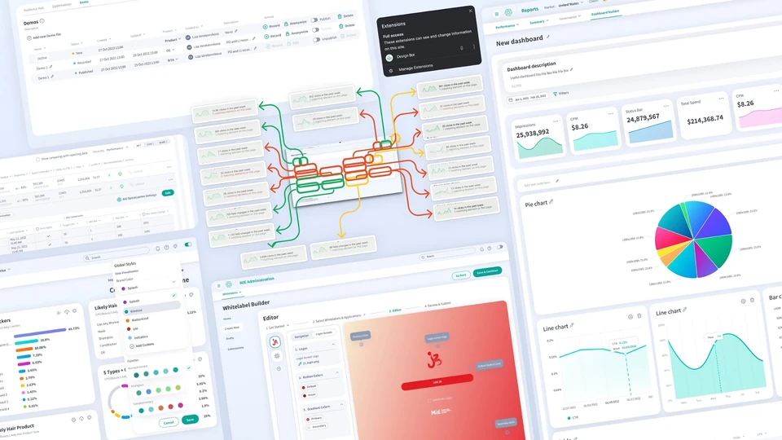
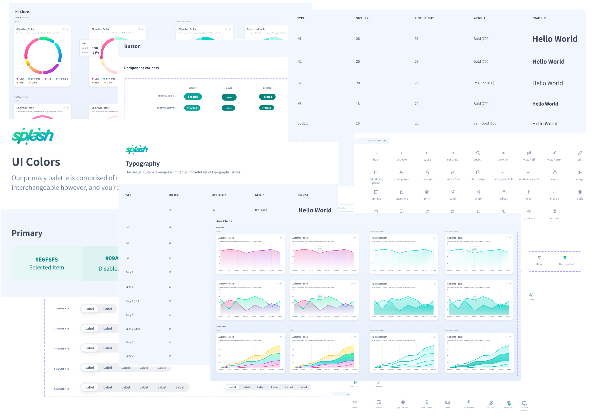
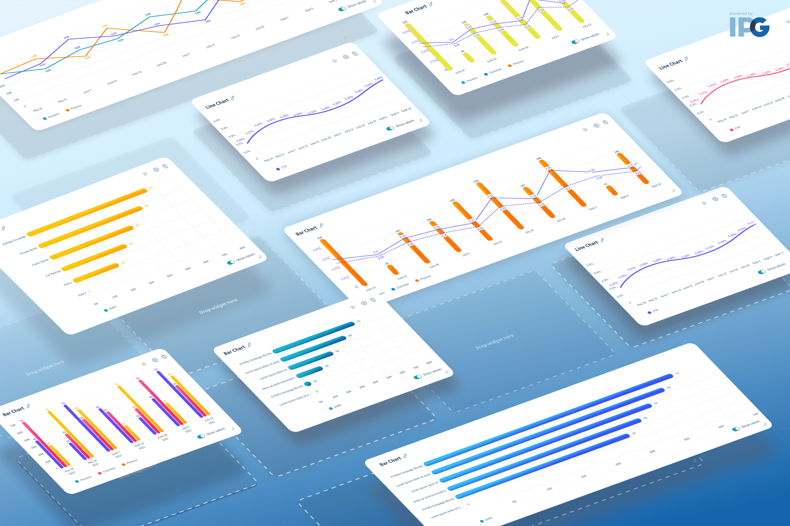
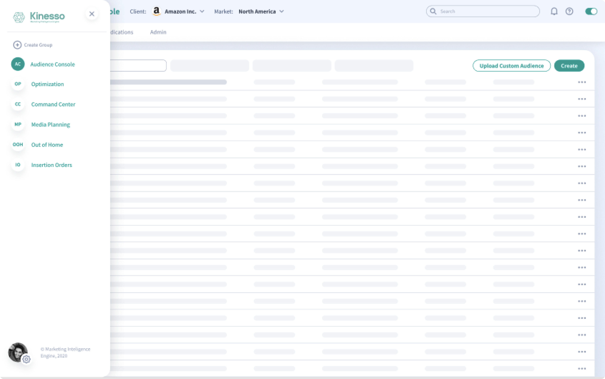
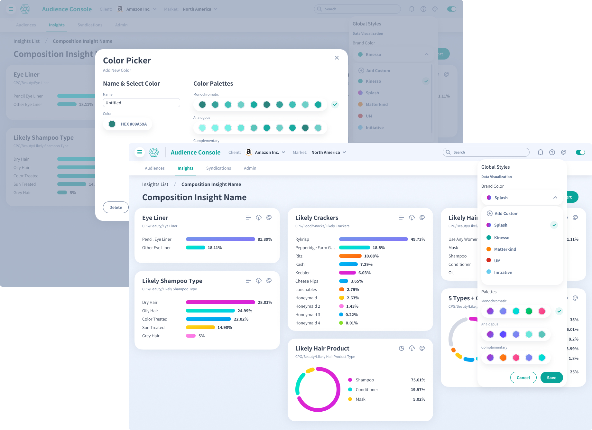
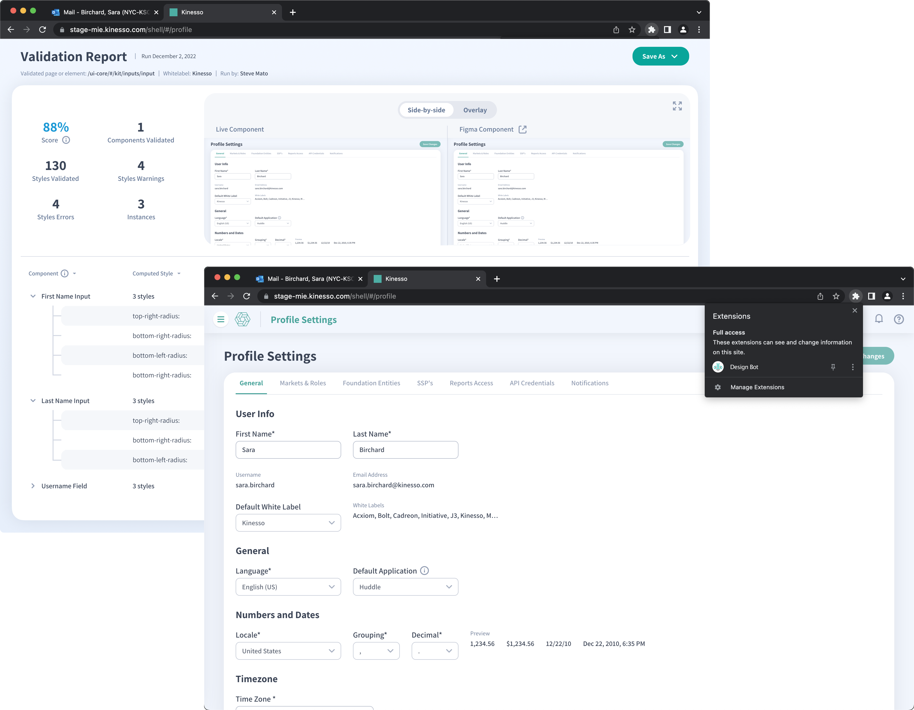
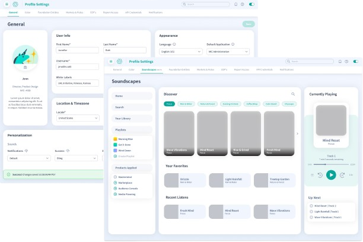
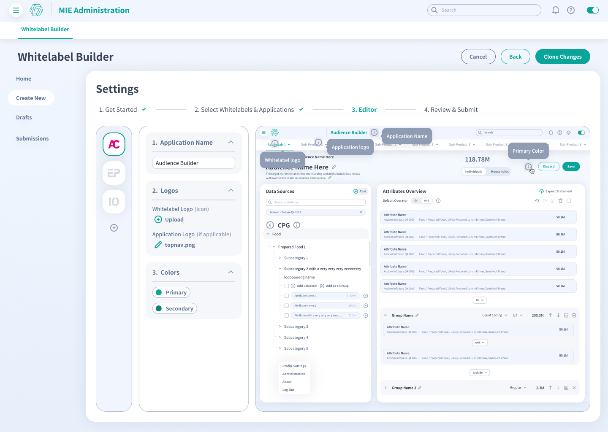

Splash Design System
I helped shape an award-winning, research-backed design system for a 20+ product suite moving toward a more contemporary, scalable SaaS experience.

A fragmented product suite needed one design language.
- ChallengeA developer-led environment created inconsistency across products, hindering usability and brand cohesion.
- SolutionA research-backed design system with components, styles, icons, personas, and system behaviors created from scratch.
- ImpactUnified design, development, and product teams while earning 2023 Indigo Design Awards recognition.
The system had to solve more than visual consistency.
The lack of a unified design language created inconsistency across a diverse suite. Splash needed to make the work scalable, contemporary, and SaaS-ready.
- Developer-drivenThe design approach often overlooked user needs and usability principles.
- ScalingEach product had its own nature and challenges, making consistency difficult across the suite.
- Feedback gapThe system needed to evolve with real user feedback instead of static assumptions.

The operating model was atomic, shared, user-centered, and living.
The system was built as a living foundation that could adapt with feedback, trends, and technology while still giving teams one language.
- Atomic modular designDesigns were deconstructed into smaller reusable units for consistency and smoother integration.
- Unified componentsShared components streamlined production and simplified the developer experience.
- Living documentationThe system was meant to grow with feedback instead of freezing as a static asset library.

Splash won across interface, navigation, tools, and interaction categories.
The 2023 Indigo Design Awards recognized the work with 3x Gold and 2x Silver across UX Interface & Navigation, Digital Tools & Utilities, Graphic Design, and Interaction categories.
- ProofView the Indigo award entry.
- System scale500 components, 140 styles, 300 icons, and 50 personas were created from scratch.
- Team impactThe system helped unify design, development, and product teams across the suite.
Research turned the system into product behavior, not just UI inventory.
- NavigationUsers felt overwhelmed and often only needed 3-4 of many products, so navigation had to become more relevant and customizable.
- Color pickerUsers exported data visualizations and recolored them externally, pointing to a need for in-platform brand customization.
- Design BotConsistent implementation became harder as the team and usage grew, creating a need for component and template auditing.
- PersonalizationUsers wanted tailored interaction while clients wanted white-label experiences that still honored the system.

Navigation had to reduce product overload.
Users felt overwhelmed by the breadth of the suite and generally needed only a subset of products. The navigation model was redefined so users saw more relevant products and could tailor their journey.

Brand customization moved into the product.
Users were exporting data visualizations and recoloring them externally to match client branding. A dynamic in-platform customization feature let users recolor entire data pages and save preset brand colors.

Design Bot made system adherence visible.
A proprietary Chrome extension audited designs against components and templates, flagging inconsistencies with corrective reports and quantifying design precision.
The system supported tailored experiences without breaking its own rules.


All created from scratch.500 components, 140 styles, 300 icons, and 50 personas